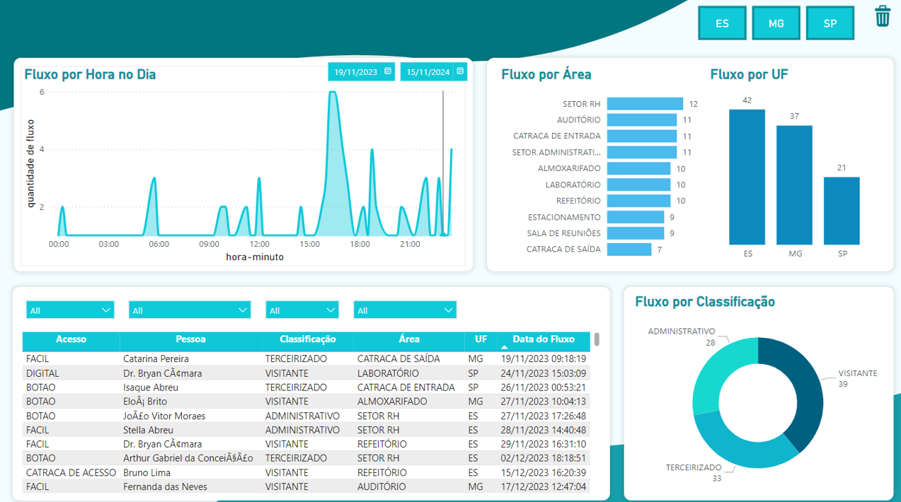

Dashboards


Leonardo
Franco
üëãOlá! Sou estudante de Ci√™ncia de Dados com foco em
aprendizado de máquina e visualização de dados.
Estou em busca de uma oportunidade de estágio para aplicar
meus conhecimentos e iniciar minha trajetória profissional na área.
Estudo Ciência de Dados na FATEC Rubens Lara e busco oportunidades para aplicar meus
conhecimentos em projetos reais.
Apaixonado por dados e tecnologia, estou construindo minha trajetória na área,
desenvolvendo minhas habilidades em Python, Excel e Power BI para transformar dados em insights estratégicos.
Atualmente atuo como back-end developer em um estágio voluntário, ajudando na construção e manutenção de uma plataforma para o centro de línguas da faculdade.